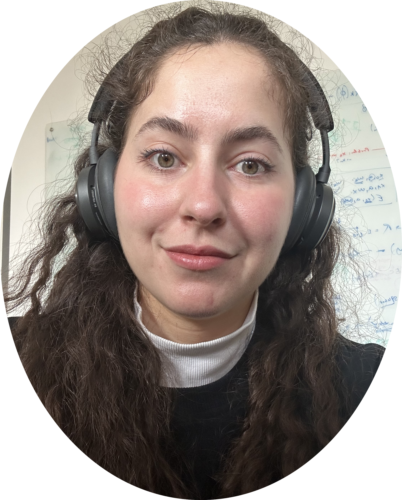

|
I’m a PhD student working on intrinsically motivated RL and open-endedness, advised by Georg Martius. My work focuses on building agents that decide what’s worth learning and explore their environment efficiently and autonomously, much like children at play.
You can reach out to me at: firstname [dot] lastname [at] gmail [dot] com. CV / Google Scholar / Twitter / Github |
 |
{kind=link}


|
|
Swadesh Jana*, Cansu Sancaktar*, Tomáš Daniš, Georg Martius, Antonio Orvieto, Pavel Kolev ICLR 2026 Workshop on AI with Recursive Self-Improvement (spotlight) ICLR 2026 Workshop on Lifelong Agents paper Pietro Mazzaglia, Cansu Sancaktar, Markus Peschl, Daniel Dijkman ICLR 2026 paper Cansu Sancaktar*, Christian Gumbsch*, Andrii Zadaianchuk, Pavel Kolev, Georg Martius ICML 2025 paper / website Jiaqi Chen, Ji Shi, Cansu Sancaktar, Jonas Frey, Georg Martius Reinforcement Learning Conference (RLC) 2025 paper Albane Ruaud, Cansu Sancaktar, Marco Bagatella, Christoph Ratzke, Georg Martius ICML 2024 paper / website Cansu Sancaktar, Justus Piater, Georg Martius NeurIPS 2023 paper / website / code Bhavya Sukhija, Lenart Treven, Cansu Sancaktar, Sebastian Blaes, Stelian Coros, Andreas Krause NeurIPS 2023 paper / code Cansu Sancaktar, Sebastian Blaes, Georg Martius NeurIPS 2022 Best poster award at the IEEE RAS Technical Committee on Model-Based Optimization for Robotics poster event 2022. paper / website / code , Georg Martius NeurIPS 2022 Competition Track paper Cansu Sancaktar, Marcel A. J. Gerven, Pablo Lanillos 2020 Joint IEEE 10th International Conference on Development and Learning and Epigenetic Robotics (ICDL-EpiRob) paper / video / code |
|
11/2025 - 11/2023 — Playful Exploration in Reinforcement Learning, |